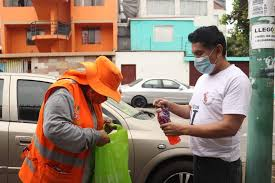
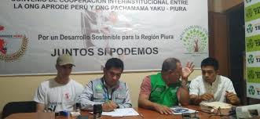

Contribuir en la promoción del desarrollo humano, social y sostenible en el Perú, desde un enfoque de integración institucional para lograr la unidad social y construir así, un Perú más justo, equitativo y solidario. Un país, donde principalmente los valores, la buena educación y la buena salud de todos sean los pilares fuertes que permitan trabajar por la erradicación de la pobreza, la desigualdad, la exclusión, la violencia y todos aquellos factores negativos, que no nos permiten vivir en una sociedad cohesionada y libre de injusticas sociales. Fortalecer la gestión institucional, promoviendo la responsabilidad social y las relaciones entre la comunidad y la empresa privada, la cooperación técnica nacional e internacional como soporte técnico y financiero para lograr el desarrollo de actividades, proyectos y programas, contribuyendo así a la erradicación de la pobreza, la desigualdad, la exclusión social, creando espacios de encuentro con el gobierno central, regional y/o local para promover acciones conjuntas en pro del desarrollo a nivel comunitario en especial de las zonas rurales a nivel nacional. Promover acciones de ayuda humanitaria y de cooperación para el desarrollo en el marco de los Objetivos del Desarrollo Sostenible (O.D.S) con un enfoque de participación y liderazgo en favor del desarrollo de las comunidades en situación de vulnerabilidad y riesgo social a nivel local, regional y nacional
Contribuyendo en la Promoción del Desarrollo Humano, Social y Sostenible en el Perú.

